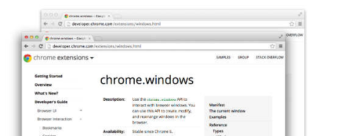

chrome.windows
| Description: |
Use the chrome.windows API to interact with browser windows. You can use this API to create, modify, and rearrange windows in the browser.
|
| Availability: |
Since Chrome 38.
|
| Permissions: |
The chrome.windows API can be used
without declaring any permission.
However, the "tabs" permission is
required in order to populate the
url,
pendingUrl,
title, and
favIconUrl properties of
Tab objects.
|
Manifest
When requested, a windows.Window
will contain an array of tabs.Tab objects.
You must declare the "tabs" permission in your
manifest if you require access to the
url,
pendingUrl,
title, or
favIconUrl properties of
tabs.Tab.
For example:
{
"name": "My extension",
...
"permissions": ["tabs"],
...
}
The current window
Many functions in the extension system take an optional windowId parameter, which defaults to the current window.
The current window is the window that contains the code that is currently executing. It's important to realize that this can be different from the topmost or focused window.
For example, say an extension creates a few tabs or windows from a single HTML file, and that the HTML file contains a call to tabs.query. The current window is the window that contains the page that made the call, no matter what the topmost window is.
In the case of the event page, the value of the current window falls back to the last active window. Under some circumstances, there may be no current window for background pages.
Examples

You can find simple examples of using the windows module in the
examples/api/windows
directory.
Another example is in the
tabs_api.html file
of the
inspector
example.
For other examples and for help in viewing the source code, see
Samples.
Summary
| Types | |
|---|---|
| WindowType | |
| WindowState | |
| Window | |
| CreateType | |
| QueryOptions | |
| Properties | |
| WINDOW_ID_NONE | |
| WINDOW_ID_CURRENT | |
| Methods | |
get −
chrome.windows.get(integer windowId, QueryOptions queryOptions, function callback)
| |
getCurrent −
chrome.windows.getCurrent( QueryOptions queryOptions, function callback)
| |
getLastFocused −
chrome.windows.getLastFocused( QueryOptions queryOptions, function callback)
| |
getAll −
chrome.windows.getAll( QueryOptions queryOptions, function callback)
| |
create −
chrome.windows.create(object createData, function callback)
| |
update −
chrome.windows.update(integer windowId, object updateInfo, function callback)
| |
remove −
chrome.windows.remove(integer windowId, function callback)
| |
| Events | |
| onCreated | |
| onRemoved | |
| onFocusChanged | |
| onBoundsChanged | |
Types
WindowType
type property; for example, when querying closed windows from the sessions API.| Enum |
|---|
|
WindowState
state property; for example, when querying closed windows from the sessions API.| Enum |
|---|
|
Window
| properties | ||
|---|---|---|
| integer | (optional) id |
The ID of the window. Window IDs are unique within a browser session. In some circumstances a window may not be assigned an |
| boolean | focused |
Whether the window is currently the focused window. |
| integer | (optional) top |
The offset of the window from the top edge of the screen in pixels. In some circumstances a window may not be assigned a |
| integer | (optional) left |
The offset of the window from the left edge of the screen in pixels. In some circumstances a window may not be assigned a |
| integer | (optional) width |
The width of the window, including the frame, in pixels. In some circumstances a window may not be assigned a |
| integer | (optional) height |
The height of the window, including the frame, in pixels. In some circumstances a window may not be assigned a |
| array of tabs.Tab | (optional) tabs |
Array of tabs.Tab objects representing the current tabs in the window. |
| boolean | incognito |
Whether the window is incognito. |
| WindowType | (optional) type |
The type of browser window this is. |
| WindowState | (optional) state |
The state of this browser window. |
| boolean | alwaysOnTop |
Whether the window is set to be always on top. |
| string | (optional) sessionId |
The session ID used to uniquely identify a window, obtained from the sessions API. |
CreateType
| Enum |
|---|
"normal",
"popup",
or "panel"
|
QueryOptions
Since Chrome 88. Warning: this is the current Dev channel. Learn more.
| properties | ||
|---|---|---|
| boolean | (optional) populate |
If true, the windows.Window object has a tabs property that contains a list of the tabs.Tab objects. The |
| array of WindowType | (optional) windowTypes |
If set, the windows.Window returned is filtered based on its type. If unset, the default filter is set to |
Properties
-1 |
chrome.windows.WINDOW_ID_NONE |
The windowId value that represents the absence of a chrome browser window. |
-2 |
chrome.windows.WINDOW_ID_CURRENT |
The windowId value that represents the current window. |
Methods
get
chrome.windows.get(integer windowId, QueryOptions queryOptions, function callback)
Gets details about a window.
| Parameters | |||||
|---|---|---|---|---|---|
| integer | windowId | ||||
| QueryOptions | (optional) queryOptions |
Since Chrome 88. Warning: this is the current Dev channel. Learn more. |
|||
| function | callback |
The callback parameter should be a function that looks like this: function( Window window) {...};
|
|||
getCurrent
chrome.windows.getCurrent( QueryOptions queryOptions, function callback)
Gets the current window.
| Parameters | |||||
|---|---|---|---|---|---|
| QueryOptions | (optional) queryOptions |
Since Chrome 88. Warning: this is the current Dev channel. Learn more. |
|||
| function | callback |
The callback parameter should be a function that looks like this: function( Window window) {...};
|
|||
getLastFocused
chrome.windows.getLastFocused( QueryOptions queryOptions, function callback)
Gets the window that was most recently focused — typically the window 'on top'.
| Parameters | |||||
|---|---|---|---|---|---|
| QueryOptions | (optional) queryOptions |
Since Chrome 88. Warning: this is the current Dev channel. Learn more. |
|||
| function | callback |
The callback parameter should be a function that looks like this: function( Window window) {...};
|
|||
getAll
chrome.windows.getAll( QueryOptions queryOptions, function callback)
Gets all windows.
| Parameters | |||||
|---|---|---|---|---|---|
| QueryOptions | (optional) queryOptions |
Since Chrome 88. Warning: this is the current Dev channel. Learn more. |
|||
| function | callback |
The callback parameter should be a function that looks like this: function(array of Window windows) {...};
|
|||
create
chrome.windows.create(object createData, function callback)
Creates (opens) a new browser window with any optional sizing, position, or default URL provided.
| Parameters | |||||||||||||||||||||||||||||||||||
|---|---|---|---|---|---|---|---|---|---|---|---|---|---|---|---|---|---|---|---|---|---|---|---|---|---|---|---|---|---|---|---|---|---|---|---|
| object | (optional) createData |
|
|||||||||||||||||||||||||||||||||
| function | (optional) callback |
If you specify the callback parameter, it should be a function that looks like this: function( Window window) {...};
|
|||||||||||||||||||||||||||||||||
update
chrome.windows.update(integer windowId, object updateInfo, function callback)
Updates the properties of a window. Specify only the properties that to be changed; unspecified properties are unchanged.
| Parameters | |||||||||||||||||||||||
|---|---|---|---|---|---|---|---|---|---|---|---|---|---|---|---|---|---|---|---|---|---|---|---|
| integer | windowId | ||||||||||||||||||||||
| object | updateInfo |
|
|||||||||||||||||||||
| function | (optional) callback |
If you specify the callback parameter, it should be a function that looks like this: function( Window window) {...};
|
|||||||||||||||||||||
remove
chrome.windows.remove(integer windowId, function callback)
Removes (closes) a window and all the tabs inside it.
| Parameters | ||
|---|---|---|
| integer | windowId | |
| function | (optional) callback |
If you specify the callback parameter, it should be a function that looks like this: function() {...};
|
Events
onCreated
Fired when a window is created.
Filters
-
array of WindowType
windowTypes
Conditions that the window's type being created must satisfy. By default it satisfies ['normal', 'popup'].
onRemoved
Fired when a window is removed (closed).
Filters
-
array of WindowType
windowTypes
Conditions that the window's type being removed must satisfy. By default it satisfies ['normal', 'popup'].
addListener
chrome.windows.onRemoved.addListener(function callback)
| Parameters | |||||
|---|---|---|---|---|---|
| function | callback |
The callback parameter should be a function that looks like this: function(integer windowId) {...};
|
|||
onFocusChanged
Fired when the currently focused window changes. Returns chrome.windows.WINDOW_ID_NONE if all Chrome windows have lost focus. Note: On some Linux window managers, WINDOW_ID_NONE is always sent immediately preceding a switch from one Chrome window to another.
Filters
-
array of WindowType
windowTypes
Conditions that the window's type being removed must satisfy. By default it satisfies ['normal', 'popup'].
addListener
chrome.windows.onFocusChanged.addListener(function callback)
| Parameters | |||||
|---|---|---|---|---|---|
| function | callback |
The callback parameter should be a function that looks like this: function(integer windowId) {...};
|
|||
onBoundsChanged
Since Chrome 86.
Fired when a window has been resized; this event is only dispatched when the new bounds are committed, and not for in-progress changes.